Chapter 1 Exploratory Data Analysis
1.1 Getting Started With R
1.1.1 Installing R
For this class, you will be using R Studio to complete statistical analyses on your computer.
To begin using R Studio, you will need to install “R” first and then install “R Studio” on your computer.
Step 1: Download R
(a) Visit https://www.r-project.org/
(b) Click CRAN under Download
(c) Select any of the mirrors
(d) Click the appropriate link for your type of system (Mac, Windows, Linux)
(e) Download R on this next page.
(For Windows, this will say install R for the first time. For Mac, this will be under Latest release and will be something like R-4.1.0.pkg – the numbers may differ depending on the most recent version)
(f) Install R on your computer
Step 2: Download R Studio
(a) Visit https://www.rstudio.com/products/rstudio/download/#download
(b) Click to download
(c) Install R Studio on your computer
Step 3: Verify R Studio is working
(a) Open R Studio
(b) Let’s enter a small dataset and calculate the average to make sure everything is working correctly.
(c) In the console, type in the following dataset of Sammy Sosa’s season home run totals from 1998–2002:
sosa.HR <- c(66, 63, 50, 64, 49)- In the console, calculate the average season home run total for Sammy Sosa between 1998–2002:
mean(sosa.HR)## [1] 58.4(e) Did you find Slammin’ Sammy’s average home run total from 1998–2002 was 58.4? If so, you should be set up correctly!
1.1.2 Some R Basics
For the following examples, let’s consider Peyton Manning’s career with the Denver Broncos. In his four seasons with the Broncos, Manning’s passing yard totals were: 4659, 5477, 4727, 2249. Let’s enter this data into R. To enter a vector of data, use the c() function.
peyton <- c(4659, 5477, 4727, 2249)To look at the data you just put in the variable peyton, type peyton into the console and press enter.
peyton## [1] 4659 5477 4727 2249Some basic function for calculating summary statistics include summary, mean(), median(), var(), and sd().
summary(peyton)## Min. 1st Qu. Median Mean 3rd Qu. Max.
## 2249 4056 4693 4278 4914 5477mean(peyton)## [1] 4278sd(peyton)## [1] 1402.522R allows you to install additional packages (collections of functions) that aren’t offered in the base version of R. To install a package, use install.packages(
One package that we will use frequently is tidyverse. This package includes several other packages and functions such as ggplot (plotting function), dplyr (data manipulation package), and stringr (string manipulation package).
install.packages("tidyverse")
library("tidyverse")You will also need to know how to load datasets from files. For this class, we will typically provide data files is .csv format.
Here is how to load a file:
# load readr package and load example dataset
library(readr)
NFL_2021_Team_Passing <- read_csv("data/NFL_2021_Team_Passing.csv")
# we can look at the header (first few entries) using 'head()'
head(NFL_2021_Team_Passing)## # A tibble: 6 × 25
## Rk Tm G Cmp Att `Cmp%` Yds TD `TD%` Int `Int%` Lng
## <dbl> <chr> <dbl> <dbl> <dbl> <dbl> <dbl> <dbl> <dbl> <dbl> <dbl> <dbl>
## 1 1 Tampa Bay… 17 492 731 67.3 5229 43 5.9 12 1.6 62
## 2 2 Los Angel… 17 443 674 65.7 4800 38 5.6 15 2.2 72
## 3 3 Dallas Co… 17 444 647 68.6 4800 40 6.2 11 1.7 73
## 4 4 Kansas Ci… 17 448 675 66.4 4791 37 5.5 13 1.9 75
## 5 5 Los Angel… 17 406 607 66.9 4642 41 6.8 18 3 79
## 6 6 Las Vegas… 17 429 628 68.3 4567 23 3.7 14 2.2 61
## # … with 13 more variables: `Y/A` <dbl>, `AY/A` <dbl>, `Y/C` <dbl>,
## # `Y/G` <dbl>, Rate <dbl>, Sk <dbl>, SKYds <dbl>, `Sk%` <dbl>, `NY/A` <dbl>,
## # `ANY/A` <dbl>, `4QC` <dbl>, GWD <dbl>, EXP <dbl>1.2 Descriptive Statistics
1.2.1 Definitions
Definition 1.1 A population is a well-defined complete collection of objects.
Definition 1.2 A sample is a subset of the population.
Example 1.1 Suppose we are interested in studying Peyton’s Manning’s season passing yards totals. How could you define the population and what is one possible sample?
Definition 1.3 Quantitative data is numeric data or numbers. It can be broken into two further categories: discrete and continuous data.
Definition 1.4 Discrete data is quantitative data with a finite or countably infinite number of values.
Definition 1.5 Continuous data is quantitative data with an uncountably infinite number of values or data taken from an interval.
Example 1.2 What are possible discrete and continuous data associated with Peyton Manning?
Definition 1.6 Qualitative data refers to names, categories, or descriptions. It can also be broken down into two further categories, nominal data and ordinal data.
Definition 1.7 Nominal data is qualitative data with no natural ordering.
Definition 1.8 Ordinal data is qualitative data with a natural ordering.
Example 1.3 What are possible nominal and ordinal data associated with Peyton Manning?
1.2.2 Descriptive Statistics
While we will learn about some descriptive statistics that are unique to specific sports, there are some descriptive statistics that are frequently used in many applications.
1.2.2.1 Descriptive Statistics for Quantitative Data
There are different descriptive statistics depending on the type of data you are analyzing. We will begin by looking at descriptive statistics for quantitative data.
To begin, let \(x_1, x_2, \ldots, x_n\) represent a numerical dataset with a sample of size \(n\), where \(x_i\) is the \(i^\text{th}\) value in the dataset.
Definition 1.9 The sum of the data values is given by: \(\sum_{i=1}^n x_i = x_1 + x_2 + \ldots + x_n\)
Definition 1.10 The sample mean (or sample average), \(\bar{x}\), of the numerical dataset is given by \(\bar{x} = \frac{1}{n} \sum_{i=1}^n x_i\)
Definition 1.11 The population mean (or population average), \(\mu\), is the mean value for the entire population.
The mean can be thought of as a measure of center or more generally, a measure of location.
Example 1.4 Recall that Peyton Manning’s season passing yards total while with the Broncos were: 4659, 5477, 4727, 2249. Calculate the sample mean of these values.
# Calculate the sample of Peyton Manning's passing yards season totals with
# Colts
peyton.broncos <- c(4659, 5477, 4727, 2249)
mean(peyton.broncos)## [1] 4278In sports statistics, we often have to choose between using a descriptive statistic that summarizes a quantity versus a descriptive statistic that summarizes a rate. For instance, in basketball, we can compare two players based on how many points they score in a game (total quantity) or we can compare two players based on how many points per minute played (rate statistic). Many applications in sports analytics focus more on rate statistics rather than quantity statistics. Why?
We can measure the spread or variability of a dataset using variance and standard devatiation.
Definition 1.12 The sample variance, \(s^2\), of the numerical dataset is a measure of spread and is given by \(s^2 = \frac{1}{n-1}\sum_{i=1}^n (x_i - \bar{x})^2\)
Definition 1.13 The sample standard deviation, \(s\), of the numerical dataset is a measure of spread and is given by \(s = \sqrt{s^2} = \sqrt{\frac{1}{n-1}\sum_{i=1}^n (x_i - \bar{x})^2}\)
Definition 1.14 The population variance, \(\sigma^2\), is the variance for an entire population.
Definition 1.15 The population standard deviation, \(\sigma\), is the standard deviation for an entire population.
We often prefer to work with standard deviations as a measure of spread as opposed to variance because standard deviations are given in our original units.
# Calculate the variance and standard deviation of Peyton Manning's passing
# yards season totals with Broncos
var(peyton.broncos) # units: yards^2## [1] 1967068sd(peyton.broncos) # units: yards## [1] 1402.522Definition 1.16 The sample median, \(\tilde{x}\), of a numerical dataset is the middle value when the data are ordered from smallest to largest. In other words, let \(x_1, x_2, \ldots, x_n\) be the (unordered) dataset and let \(x_{(1)},x_{(2)}, \ldots, x_{(n)}\) be the same dataset but ordered from smallest to largest. If \(n\) is odd, then \(\tilde{x} = x_{(n+1)/2}\) and if \(n\) is even, then \(\tilde{x} = \frac{1}{2} \cdot \left[x_{\left(\frac{n}{2}\right)} + x_{\left(\frac{n+1}{2}\right)}\right]\).
Example 1.5 Calculate the sample median of Peyton Manning’s season passing yards total while with the Colts (3739, 4135, 4413, 4131, 4200, 4267, 4557, 3747, 4397, 4040, 4002, 4500, 4700).
Like sample mean, sample median is a measure of center. It gives you an idea of where the ``middle” of your dataset is.
We can calculate sample mean and sample median in R as follows:
# Calculate the median of Peyton Manning's passing yards season totals with
# Broncos and Colts
peyton.colts <- c(3739, 4135, 4413, 4131, 4200, 4267, 4557, 3747, 4397, 4040, 4002,
4500, 4700)
median(peyton.broncos)## [1] 4693median(peyton.colts)## [1] 4200Definition 1.17 A percentile is a measure of relative standing. The \(p^\text{th}\) percentile is the number where at least p% of the data values are less than or equal to this number.
Definition 1.18 A quantile is a measure of relative standing and are the cut points for breaking a distribution of values into equal sized bins.
Definition 1.19 A quartile is a measure of relative standing and are the cut points for breaking a distribution of values into four equal parts.
# Calculate the 10th and 90th percentile of Peyton Manning's passing yards
# season totals with Colts
quantile(peyton.colts, 0.1)## 10%
## 3798quantile(peyton.colts, 0.9)## 90%
## 4545.6quantile(peyton.colts, c(0.1, 0.9))## 10% 90%
## 3798.0 4545.6Special percentiles:
1. 25th percentile = 1st quartile = \(Q_1\)
2. 50th percentile = 2nd quartile = \(Q_2\) = \(\tilde{x}\)
3. 75th percentile = 3rd quartile = \(Q_3\)
Definition 1.20 Range is a measure of spread, measures the full width of a dataset, and is given by: \(Range = Max - Min\).
Definition 1.21 Interquartile range is a measure of spread, measures the width of the middle 50% of a dataset, and is given by: \(IQR = Q_3 - Q_1\).
Definition 1.22 A five number summary describes the center, spread, and edges of a dataset and is given by: \((Min,Q_1,Q_2,Q_3,max)\).
summary(peyton.colts)## Min. 1st Qu. Median Mean 3rd Qu. Max.
## 3739 4040 4200 4218 4413 4700quantile(peyton.colts, c(0, 0.25, 0.5, 0.75, 1))## 0% 25% 50% 75% 100%
## 3739 4040 4200 4413 47001.2.2.2 Descriptive Statistics for Qualitative Data
In sports statistics, we also encounter qualitative (categorical) data which is names or labels which has its own descriptive statistics.
To begin, let \(x_1, x_2, \ldots, x_n\) represent a categorical dataset with a sample of size \(n\), where \(x_i\) is the \(i^\text{th}\) value in the dataset.
Definition 1.23 The proportion of sampled data that fall into a category is given by: \(p = \frac{\#\text{ in category}}{\#\text{ total}}\)
’’Proportion” and “Probability” are often used interchangeably. Both have a minimum value of 0 and a maximum value of 1.
Definition 1.24 The percentage of sampled data that fall into a category is given by: \(P\% = 100 \cdot p = 100 \cdot \frac{\#\text{ in category}}{\#\text{ total}}\)
Percentages in this context can have a minimum value of 0% and a maximum value of 100%.
Example 1.6 In 2014, Peyton Manning started as quarterback for the Denver Broncos. The result of the Broncos’ 16-game season was:
Win, Win, Loss, Win, Win, Win, Win, Loss, Win, Loss, Win, Win, Win, Win, Loss, Win
Calculate the proportion and percentage of Broncos’ winning games in 2014.
broncos2014 <- c("Win", "Win", "Loss", "Win", "Win", "Win", "Win", "Loss", "Win",
"Loss", "Win", "Win", "Win", "Win", "Loss", "Win")
broncos.prop <- sum(broncos2014 == "Win")/length(broncos2014)
broncos.prop## [1] 0.75broncos.perc <- 100 * broncos.prop
broncos.perc## [1] 75We can also build a frequency table that summarizes the categories and their occurrences using table() in R. Note that table() works for quantitative and qualitative data.
table(broncos2014)## broncos2014
## Loss Win
## 4 121.3 Visualizations
Conveying information visually is also an important part in providing a description of a dataset.
R provides some basic plotting functions such as plot, hist, and barplot. These plotting functions are simple and not always very clean looking.
In this class, we will use analogous plotting functions in ggplot2 that are much improved plotting functions.
If you have already installed the tidyverse package, it should have also installed the ggplot2 package.
# You have likely already installed the tidyverse package but if not, use the
# following command without the '#' install.packages('tidyverse')
# Load the tidyverse package (which includes ggplot2)
library(tidyverse)## ── Attaching packages ─────────────────────────────────────── tidyverse 1.3.1 ──## ✔ ggplot2 3.3.6 ✔ dplyr 1.0.9
## ✔ tibble 3.1.7 ✔ stringr 1.4.0
## ✔ tidyr 1.2.0 ✔ forcats 0.5.1
## ✔ purrr 0.3.4## ── Conflicts ────────────────────────────────────────── tidyverse_conflicts() ──
## ✖ dplyr::filter() masks stats::filter()
## ✖ dplyr::lag() masks stats::lag()Let’s load the file ``NFL_2021_Team_Passing.csv” which contains NFL Team Passing Statistics, 2021
library(readr)
NFL_2021_Team_Passing <- read_csv("data/NFL_2021_Team_Passing.csv")Histograms are one of the most common and basic ways to visualize a dataset’s distribution of values. To make a histogram, you will use ggplot and geom_histogram.
Example 1.7 Create a histogram of the NFL Team Passing Yards in 2021.
NFL_2021_Team_Passing %>%
ggplot(aes(x = Yds)) + geom_histogram()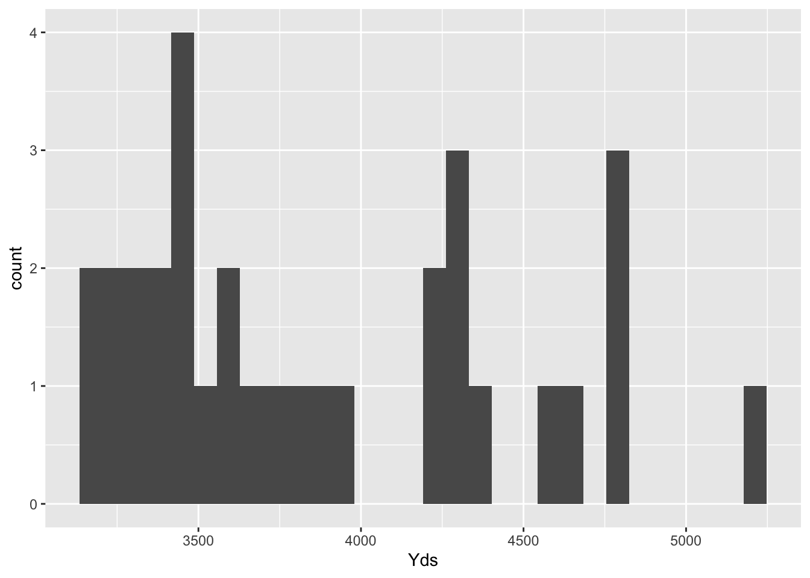
Notice how %>% is used to pipe the dataset into ggplot. This is using the pipe function from the dplyr package.
By default, geom_histogram uses 30 bins but this is customizable. Let’s make the bins have a width of 200.
All good visualizations have good labels. Let’s improve the axis labels and give the figure a title.
NFL_2021_Team_Passing %>%
ggplot(aes(x = Yds)) + geom_histogram(binwidth = 200) + labs(x = "Team Passing Yards",
y = "Team Passing Touchdowns", title = "NFL Team Passing Yards, 2021")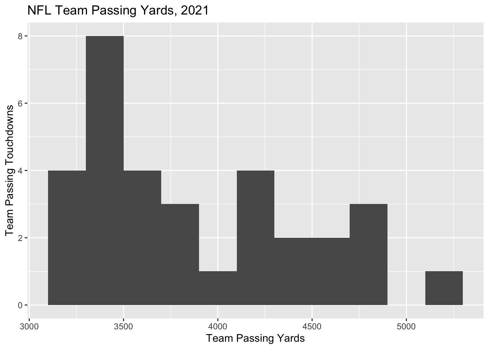
We also have numerous options to change the appearance of plots when using ggplot. Let’s change the bins color to blue and change the bin borders to white.
NFL_2021_Team_Passing %>%
ggplot(aes(x = Yds)) + geom_histogram(color = "white", fill = "blue", binwidth = 200) +
labs(x = "Team Passing Yards", y = "Team Passing Touchdowns", title = "NFL Team Passing Yards, 2021")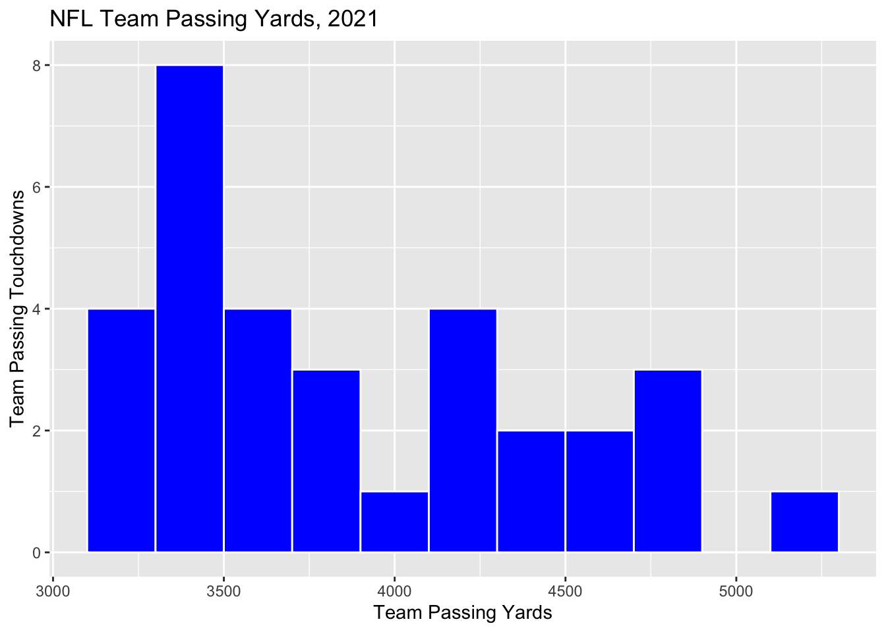
We can also create bar plots using ggplot using the geom_bar function.
Example 1.8 Create a bar plot with teams on the horizontal axis and passing touchdowns on the vertical axis.
NFL_2021_Team_Passing %>%
ggplot(aes(x = Tm, y = Yds)) + geom_bar(stat = "identity")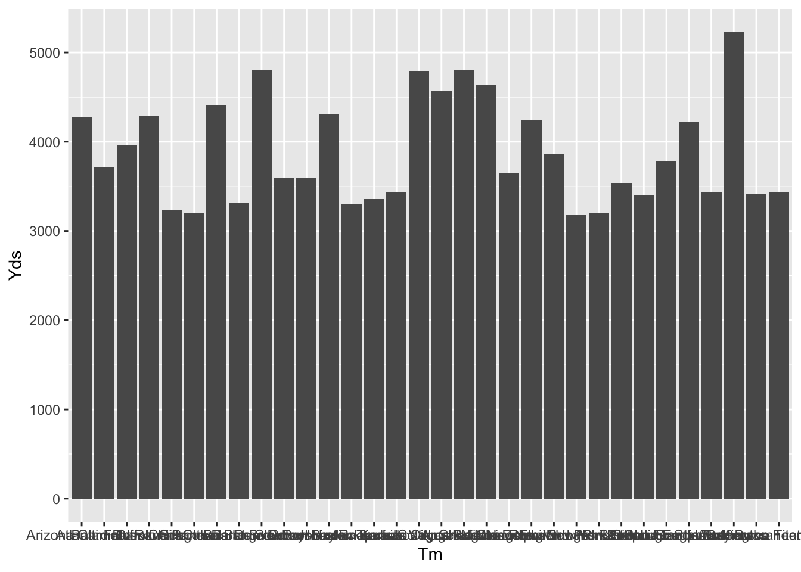
The team labels are a complete mess. Let’s fix this and make some adjustments to the axis labels and figure title.
NFL_2021_Team_Passing %>%
ggplot(aes(x = Tm, y = Yds)) + geom_bar(stat = "identity") + labs(x = "Team Passing Yards",
y = "Team Passing Touchdowns", title = "NFL Team Passing Yards, 2021") + theme(axis.text.x = element_text(angle = 90,
vjust = 0.5, hjust = 1))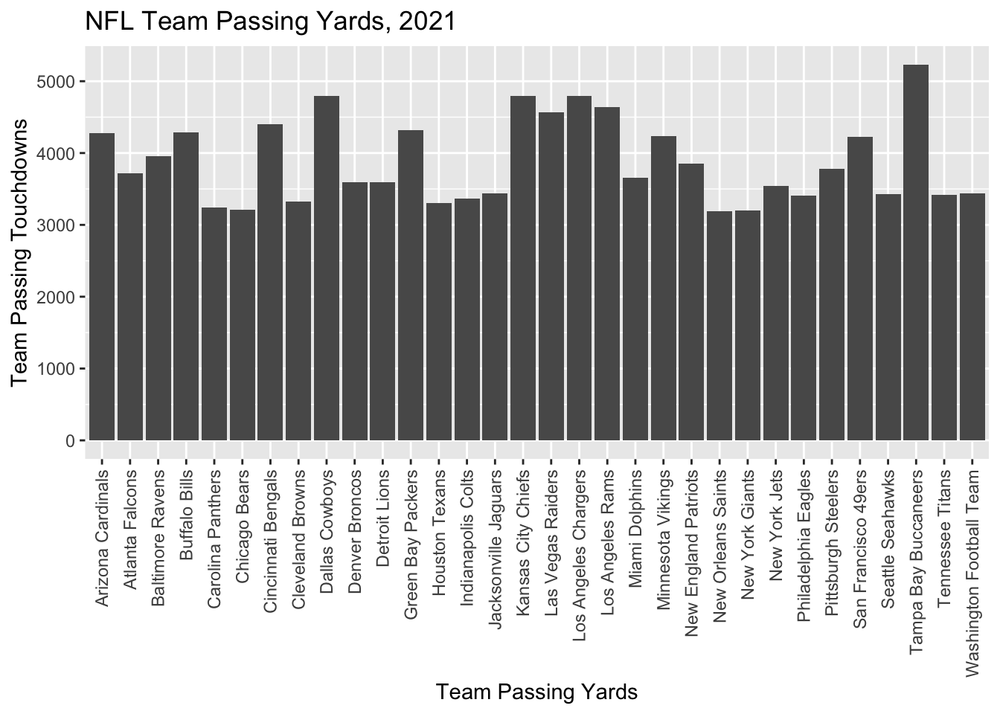
We can flip this graph if we like as well. Note that when we flip the graph, our labels get in reverse ordering, so this can be fixed using fct_rev() which is part of the forcats package.
NFL_2021_Team_Passing %>%
ggplot(aes(x = fct_rev(Tm), y = Yds)) + geom_bar(stat = "identity") + labs(x = "Team Passing Yards",
y = "Team Passing Touchdowns", title = "NFL Team Passing Yards, 2021") + coord_flip()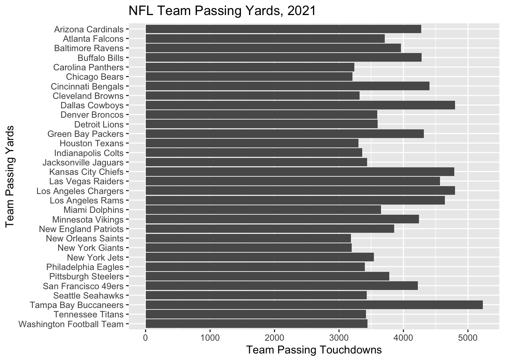
Another common and useful visualization is a scatterplot which shows the relationship between two numeric variable. In ggplot, you use geom_point().
Example 1.9 Create a scatterplot of Team Passing Yards and Team Passing Touchdowns from the NFL 2021 dataset.
NFL_2021_Team_Passing %>%
ggplot(aes(x = Yds, y = TD, label = Tm)) + geom_point() + labs(x = "Team Passing Yards",
y = "Team Passing Touchdowns", title = "NFL Team Passing Yards, 2021")
We may want to include team labels on this plot, however, it can get messy very quickly with a lot of points.
NFL_2021_Team_Passing %>%
ggplot(aes(x = Yds, y = TD, label = Tm)) + geom_point() + labs(x = "Team Passing Yards",
y = "Team Passing Touchdowns", title = "NFL Team Passing Yards, 2021") + geom_text()
Many sports leagues have around 30 teams, so a clean scatterplot with labels can be tricky to make. Here are some options below.
# install ggrepel package
library(ggrepel)
NFL_2021_Team_Passing %>%
ggplot(aes(x = Yds, y = TD, label = Tm)) + geom_point() + labs(x = "Team Passing Yards",
y = "Team Passing Touchdowns", title = "NFL Team Passing Yards, 2021") + geom_text_repel()## Warning: ggrepel: 6 unlabeled data points (too many overlaps). Consider
## increasing max.overlaps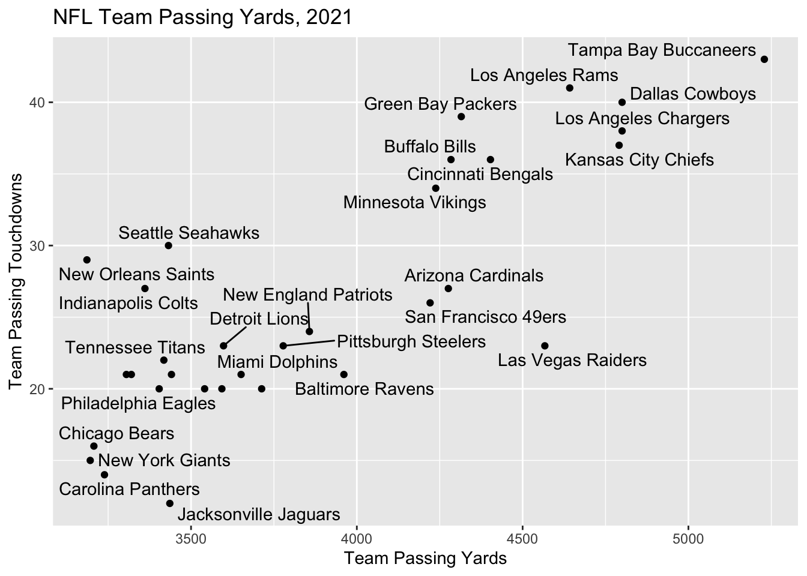
NFL_2021_Team_Passing$Abbr <- c("TB", "LAC", "DAL", "KC", "LAR", "LV", "CIN", "GB",
"BUF", "AZ", "MN", "SF", "BAL", "NE", "PIT", "ATL", "MIA", "DET", "DEN", "NYJ",
"WAS", "JAC", "SEA", "TEN", "PHI", "IND", "CLE", "HOU", "CAR", "CHI", "NYG",
"NO")
NFL_2021_Team_Passing %>%
ggplot(aes(x = Yds, y = TD, label = Abbr)) + geom_point() + labs(x = "Team Passing Yards",
y = "Team Passing Touchdowns", title = "NFL Team Passing Yards, 2021") + geom_text_repel(box.padding = 0.3)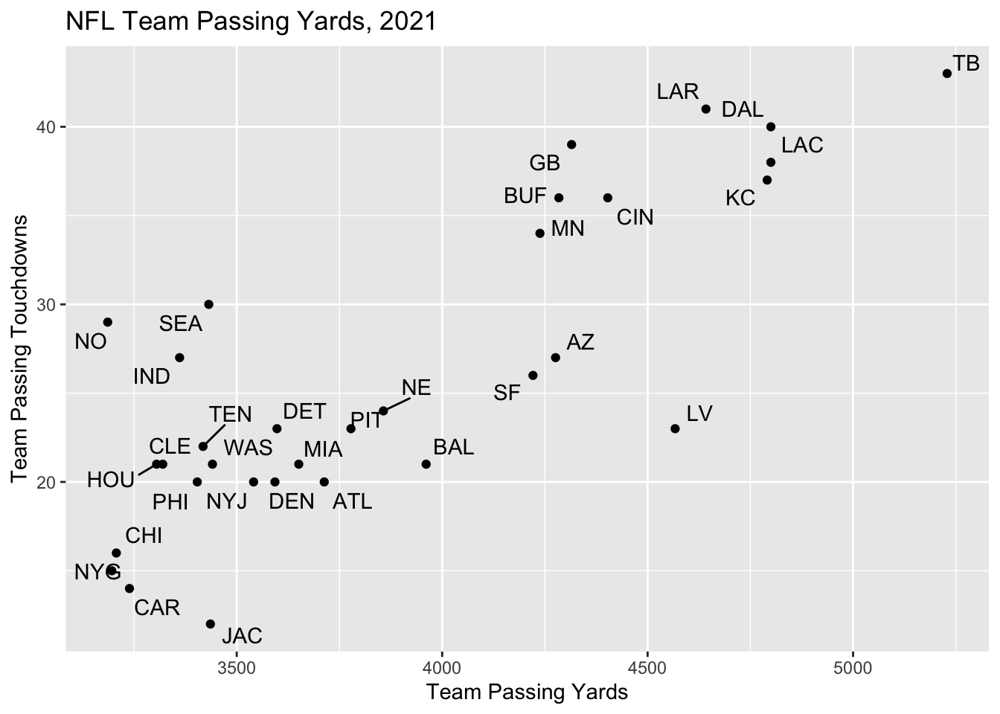
1.6 Basketball
1.6.1 Four Factors
Tibbles are a type of data frame supported by the tidyverse package. The following tibble contains data from a Mountain West tournament game played between the CSU and Wyoming women’s basketball teams during the 2021-2022 season, which CSU won 51-38. (Here’s the link to the box score on the CSU athletics website.)
library("tibble")
basketball_data <- tibble(team = c("CSU", "WYO"), FG = c(14, 15), FGA = c(48, 60),
THREEP = c(5, 4), FT = c(10, 4), FTA = c(14, 4), ORB = c(2, 14), DRB = c(31,
30), TOV = c(5, 12))
basketball_data## # A tibble: 2 × 9
## team FG FGA THREEP FT FTA ORB DRB TOV
## <chr> <dbl> <dbl> <dbl> <dbl> <dbl> <dbl> <dbl> <dbl>
## 1 CSU 14 48 5 10 14 2 31 5
## 2 WYO 15 60 4 4 4 14 30 12This tibble contains all the data needed to calculate the Four Factors. The Four Factors of a basketball game are statistics formulated by Dean Oliver, former Director of Quantitative Analysis for the Denver Nuggets (among other roles). These statistics are also promoted by sports data platforms like Hudl.com.
The first is Effective Field Goal Percentage, commonly abbreviated eFG%. The formula is as follows:
\(eFG\% = \frac{FG\ +\ 0.5(3P)}{FGA}\)
Secondly, Turnover Percentage (TOV%) is calculated as:
\(TOV\% = \frac{TOV}{FGA\ +\ 0.44(FTA)\ +\ TOV}\)
Next, Rebounding Percentage (ORB%) is computed as:
\(ORB\% = \frac{ORB}{ORB\ +\ Opponent\ DRB}\)
Finally, the Free Throw Factor is found using:
\(FT\ factor = \frac{FT}{FGA}\)
Note: You do not have to know these formulas for the test. They are just used for this example.
Let’s calculate the values of eFG%, TOV%, and Free Throw Factor for both CSU and Wyoming and add them as new columns in the tibble using the add_column function.
attach(basketball_data)
eFG <- round((FG + 0.5 * THREEP)/FGA, 3)
TOVPCT <- round(TOV/(FGA + 0.44 * FTA + TOV), 3)
FTFACTOR <- round(FT/FGA, 3)
basketball_data %>%
add_column(eFG, TOVPCT, FTFACTOR)## # A tibble: 2 × 12
## team FG FGA THREEP FT FTA ORB DRB TOV eFG TOVPCT FTFACTOR
## <chr> <dbl> <dbl> <dbl> <dbl> <dbl> <dbl> <dbl> <dbl> <dbl> <dbl> <dbl>
## 1 CSU 14 48 5 10 14 2 31 5 0.344 0.085 0.208
## 2 WYO 15 60 4 4 4 14 30 12 0.283 0.163 0.0671.7 Soccer
To begin, let’s go over a couple of basic summary statistics specific to soccer that will be necessary to understand for the following examples.
Shots (SH) represent all shots taken by a team throughout the game. This is simply an attempt by a player to shoot the ball toward the net, even if they miss or the shot is saved (Rookie Road).
Shots on Goal (SOG) represent all shots that would have gone into the goal if not saved by a defender or goalkeeper (Rookie Road).
Expected Goals (xG) “indicates how many goals a team could have expected to score based on the quantity and quality of chances that they created in a match” (Tippett 2019, 4).
Assist (A) occur when a player passes the ball to someone, and the next shot results in a goal.
Possession refers to the percentage of time a team had control of the ball during a game.
These definitions come from www.rookieroad.com and “The Expected Goals Philosophy” by James Tippett.
To learn more about expected goals, check out this YouTube video.
1.7.1 Bar Plot
Now that we have an understanding of some basic shooting statistics, let us go through some EDA examples. For this first example, we will need to install the “worldfootballR” package.
library(worldfootballR)Next we will look at some data specific to LaLiga, which is a soccer league in the men’s top professional soccer division.
# Get 'Squad Standard Stats' Data
big5_2021_stats <- fb_big5_advanced_season_stats(season_end_year = 2021, stat_type = "standard",
team_or_player = "team")
liga_2021_stats <- big5_2021_stats[which((big5_2021_stats$Comp == "La Liga")), ]# Create visual for each team's goals per game
team_goals_viz <- ggplot(data = liga_2021_stats[which(liga_2021_stats$Team_or_Opponent ==
"team"), ], aes(x = Squad, y = Gls_Per)) + geom_bar(stat = "identity")
team_goals_viz
This plot is a good starting point, but still looks pretty messy. Let’s add a title, change the axis titles, and rotate the axis labels so they are not overlapping over one another.
team_goals_viz <- team_goals_viz + xlab("Team") + ylab("Goals Per Game") + theme(axis.text.x = element_text(angle = 45,
hjust = 1)) + ggtitle("Goals Per Game by Team")
team_goals_viz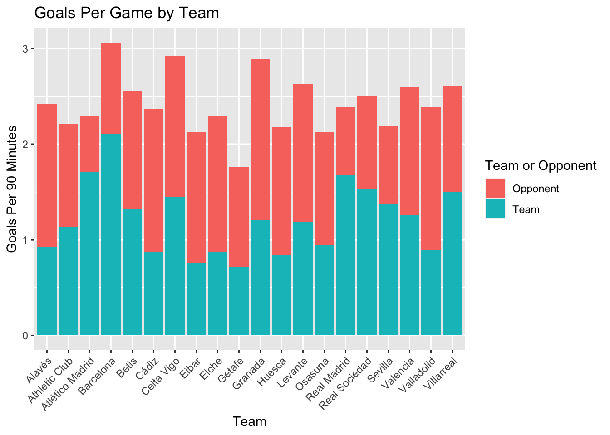
This is already looking a lot better. Now, we will add the goals scored per game against each team. Why is this of interest? Well, at first glance, Barcelona seems like a pretty impressive team, as they score more goals per game than any other team in the league. However, what if they also have more goals scored against them than any other team in the league? This could be important context, so we will include it in the graph below.
all_goals_viz <- ggplot(data = liga_2021_stats, aes(x = Squad, y = Gls_Per)) + geom_bar(stat = "identity",
aes(fill = Team_or_Opponent), position = "stack") + xlab("Team") + ylab("Goals Per 90 Minutes") +
theme(axis.text.x = element_text(angle = 45, hjust = 1)) + ggtitle("Goals Per Game by Team")
all_goals_viz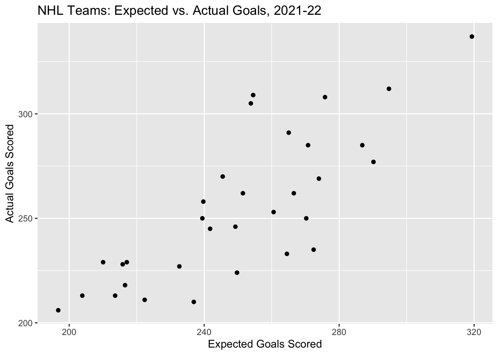
This is looking pretty good, but let’s clean it up just a bit by changing the legend title and labels.
all_goals_viz + scale_fill_discrete(name = "Team or Opponent", labels = c("Opponent",
"Team"))
What does this graph show us? Well, we are able to see the average number of goals scored for and against each team per game. It looks like Barcelona is scoring a lot more goals than they are letting be scored against them, while other teams like Valladolid tend to have a higher proportion of goals scored for the opposing team.
1.7.2 Scatter Plot
In addition to simply knowing the average actual number of goals scored for and against each team per game, we may be interested in how this compares to the expected number of goals scored per game, as well.
library(ggExtra)
act_exp_viz <- ggplot(data = liga_2021_stats, aes(x = xG_Per, y = Gls_Per, label = Squad)) +
geom_point() + scale_x_continuous(limits = c(0.75, 2.25)) + scale_y_continuous(limits = c(0.75,
2.25)) + ggtitle("Expected vs. Actual Goals Per Game") + xlab("Expected Goals Per Game") +
ylab("Actual Goals Per Game") + geom_smooth(method = "lm", se = FALSE) + theme(aspect.ratio = 2/2)
ggMarginal(act_exp_viz, type = "density")
As you can see, we fit a line to the data. At first glance, it seems to have a positive slope slightly greater than 1. What does this mean in the scenario of actual and expected goals per game?
1.7.3 Density Ridges Plot
At first glance, it seems that actual goals scored per game do not differ greatly from expected goals per game. Let us look at some density plots for actual and expected goals per game for five of the top teams in LaLiga over the last four seasons. These are the top five teams as of June 21st, 2022 on www.foxsports.com.
library(ggridges)
# Get 'Squad Standard Stats' data for the last four seasons
top_liga_2021_stats <- read_csv("data/laliga21.csv")
top_liga_2020_stats <- read_csv("data/laliga20.csv")
top_liga_2019_stats <- read_csv("data/laliga19.csv")
top_liga_2018_stats <- read_csv("data/laliga18.csv")
top_liga_2021_stats <- top_liga_2021_stats[which(top_liga_2021_stats$Squad == "Real Madrid" |
top_liga_2021_stats$Squad == "Villarreal" | top_liga_2021_stats$Squad == "Barcelona" |
top_liga_2021_stats$Squad == "Levante" | top_liga_2021_stats$Squad == "Betis"),
]
top_liga_2020_stats <- top_liga_2020_stats[which(top_liga_2020_stats$Squad == "Real Madrid" |
top_liga_2020_stats$Squad == "Villarreal" | top_liga_2020_stats$Squad == "Barcelona" |
top_liga_2020_stats$Squad == "Levante" | top_liga_2020_stats$Squad == "Betis"),
]
top_liga_2019_stats <- top_liga_2019_stats[which(top_liga_2019_stats$Squad == "Real Madrid" |
top_liga_2019_stats$Squad == "Villarreal" | top_liga_2019_stats$Squad == "Barcelona" |
top_liga_2019_stats$Squad == "Levante" | top_liga_2019_stats$Squad == "Betis"),
]
top_liga_2018_stats <- top_liga_2018_stats[which(top_liga_2018_stats$Squad == "Real Madrid" |
top_liga_2018_stats$Squad == "Villarreal" | top_liga_2018_stats$Squad == "Barcelona" |
top_liga_2018_stats$Squad == "Levante" | top_liga_2018_stats$Squad == "Betis"),
]
# Combine all four seasons' data into one data frame
top_liga_stats <- rbind(top_liga_2018_stats, top_liga_2019_stats, top_liga_2020_stats,
top_liga_2021_stats)
goals_act <- data.frame(top_liga_stats$Gls_Per[which(top_liga_stats$Team_or_Opponent ==
"team")])
goals_act$team <- top_liga_stats$Squad[which(top_liga_stats$Team_or_Opponent == "team")]
goals_act$exp_or_act <- "actual"
goals_act$year <- top_liga_stats$Season_End_Year[which(top_liga_stats$Team_or_Opponent ==
"team")]
colnames(goals_act)[1] <- "stats"
goals_exp <- data.frame(top_liga_stats$xG_Per[which(top_liga_stats$Team_or_Opponent ==
"team")])
goals_exp$team <- top_liga_stats$Squad[which(top_liga_stats$Team_or_Opponent == "team")]
goals_exp$exp_or_act <- "expected"
goals_exp$year <- top_liga_stats$Season_End_Year[which(top_liga_stats$Team_or_Opponent ==
"team")]
colnames(goals_exp)[1] <- "stats"
goals <- rbind(goals_act, goals_exp)
# Plot density ridges
ggplot(data = goals) + geom_density_ridges(aes(x = stats, y = team, fill = exp_or_act,
color = exp_or_act), alpha = 0.5, scale = 1) + scale_x_continuous(limits = c(0.75,
2.75)) + scale_y_discrete(expand = expand_scale(add = c(0.2, 1))) + ggtitle("Expected vs. Actual Goals Per Game") +
xlab("Goals Per Game") + ylab("Team") + scale_fill_cyclical(name = "Actual or Expected Goals",
labels = c("Actual", "Expected"), guide = "legend", values = c("#FF0000A0", "#A0A0A0A0")) +
scale_color_cyclical(name = "Actual or Expected Goals", labels = c("Actual",
"Expected"), guide = "legend", values = c("#FF0000A0", "#A0A0A0A0"))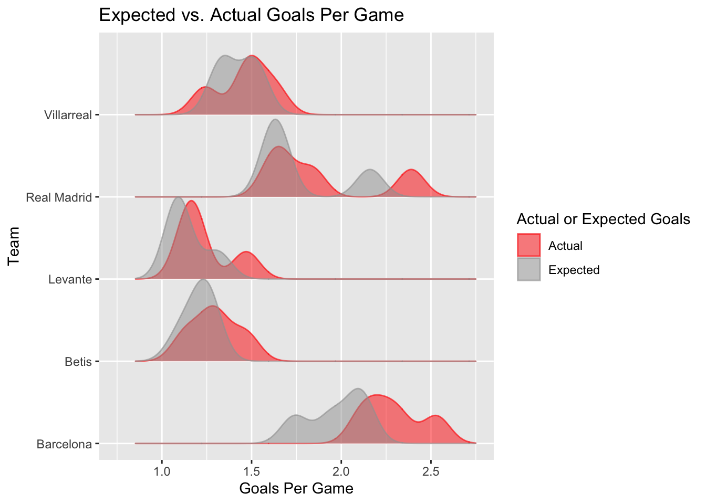
Let us break down exactly what this visual is showing us. We are looking at the density of expected and actual goals per game for the top five teams in LaLiga, over the last four seasons (with the last season ending in 2021). We can see that Barcelona is typically scoring more goals than what is expected of them, as the density of actual goals is condensed around higher goal numbers than the density of expected goals. Villarreal, however, is performing just as well as what is expected of them based on expected and actual goals scored.
1.8 Volleyball
To begin, let’s go over some basic volleyball statistics. The following definitions come from www.rookieroad.com
- A Service Ace (SA) occurs when a player’s serve touches the ground on the other team’s side without being touched by a player on that side.
- A Kill (K) occurs when a player gets the ball over the net without it being returned by the opponent.
- An Assist (AST) is a pass made directly before a player makes a kill.
- Hitting Percentage (PCT) is the number of attempted kills (minus errors) divided by the total number of kill attempts. This helps determine how well a player or team is succeeding at their kill attempts.
For Volleyball EDA, we will be using CSU Women’s Volleyball data from the last five seasons.
Let’s look at a scatter plot of hitting percentage and the number of digs. While no conclusions can be drawn from such a plot, it can give us some insight into relationships worthy of further analysis. Before creating the plot using the code below, think about what you might expect the outcome to be.
1.8.1 Scatter Plot
# Digs, Hitting Percentage, Win/Lose
dig_pct_viz <- ggplot(data = csu_vb, aes(x = DIG, y = PCT, color = W_L)) + geom_point()
dig_pct_viz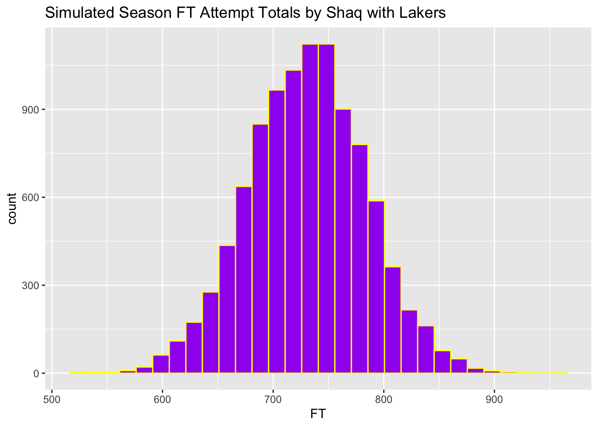
Let’s change the axis titles, legend title, and add a main title.
dig_pct_viz + labs(title = "Wins and Losses by Number of Digs and Hitting Percentage",
x = "Number of Digs (DIG)", y = "Hitting Percentage (PCT)", color = "Win or Loss")
What can we learn from this visual? Well, we can see that there is a weak linear relationship between the number of digs and hitting percentage. To an extent, hitting percentage decreases as the number of digs increases. Why is this the case? Maybe if a team has a really high hitting percentage, this means that the opposing team does not have as many opportunities to attack the other team offensively, reducing the number of opportunities for digs. It also seems that while wins and losses are somewhat evenly spread across the number of digs, there is a more clear cutoff for hitting percentage. It seems that the majority of wins are associated with a hitting percentage of at least 0.2, while the majority of losses are associated with a hitting percentage of less than 0.3.
1.8.2 Box Plot
Now let’s take a closer look at the distribution of hitting percentage and digs for wins and losses. To do this, we will create box plots for each statistic.
pct_viz <- ggplot(data = csu_vb, aes(x = PCT, y = W_L)) + geom_boxplot()
pct_viz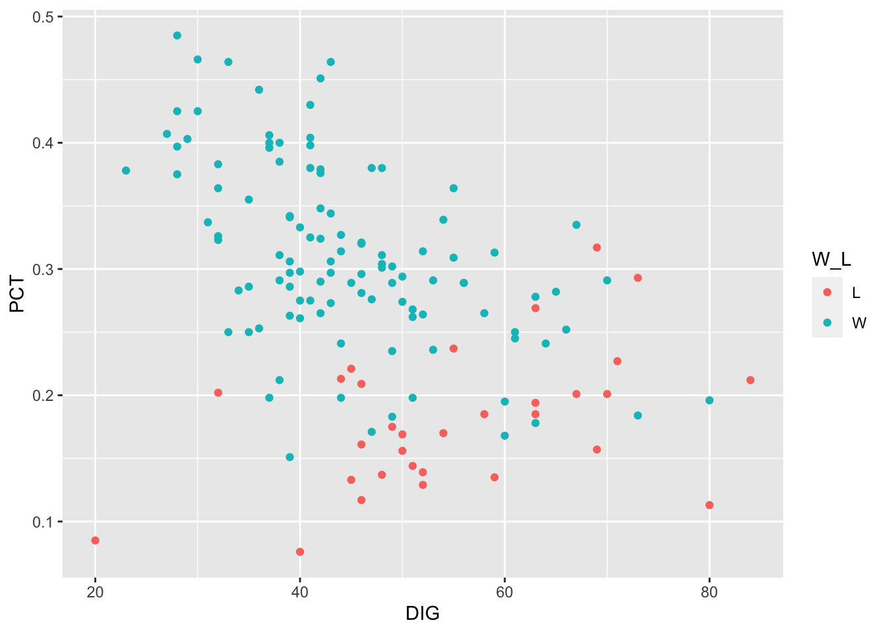
dig_viz <- ggplot(data = csu_vb, aes(x = DIG, y = W_L)) + geom_boxplot()
dig_viz
Let’s modify these plots to make them more complete and visually appealing.
pct_viz + labs(title = "Hitting Percentage for Wins and Losses", x = "Hitting Percentage (PCT)",
y = "Win or Loss") + geom_boxplot(fill = "slateblue", alpha = 0.2)
dig_viz + labs(title = "Number of Digs for Wins and Losses", x = "Number of Digs (DIG)",
y = "Win or Loss") + geom_boxplot(fill = "slateblue", alpha = 0.2)
Box plots allow us to isolate each statistic (number of kills and hitting percentage) so we can more clearly determine the center and spread of each between wins and losses.
1.9 Hockey
For this example, we’ll use a set of NHL data from moneypuck.com. First, let’s load the data into R and open the data frame.
nhl_2022_data <- read_csv("https://moneypuck.com/moneypuck/playerData/seasonSummary/2021/regular/teams.csv")
head(nhl_2022_data)## # A tibble: 6 × 107
## team...1 season name team...4 position situation games_played
## <chr> <dbl> <chr> <chr> <chr> <chr> <dbl>
## 1 WPG 2021 WPG WPG Team Level other 82
## 2 WPG 2021 WPG WPG Team Level all 82
## 3 WPG 2021 WPG WPG Team Level 5on5 82
## 4 WPG 2021 WPG WPG Team Level 4on5 82
## 5 WPG 2021 WPG WPG Team Level 5on4 82
## 6 CBJ 2021 CBJ CBJ Team Level other 82
## # … with 100 more variables: xGoalsPercentage <dbl>, corsiPercentage <dbl>,
## # fenwickPercentage <dbl>, iceTime <dbl>, xOnGoalFor <dbl>, xGoalsFor <dbl>,
## # xReboundsFor <dbl>, xFreezeFor <dbl>, xPlayStoppedFor <dbl>,
## # xPlayContinuedInZoneFor <dbl>, xPlayContinuedOutsideZoneFor <dbl>,
## # flurryAdjustedxGoalsFor <dbl>, scoreVenueAdjustedxGoalsFor <dbl>,
## # flurryScoreVenueAdjustedxGoalsFor <dbl>, shotsOnGoalFor <dbl>,
## # missedShotsFor <dbl>, blockedShotAttemptsFor <dbl>, …We can create nice looking tables using the ``kableExtra’’ package. Let’s look at the first eight rows and a samll selection of columns of the data frame and format the table output using a kable table.
library("kableExtra")##
## Attaching package: 'kableExtra'## The following object is masked from 'package:dplyr':
##
## group_rowsnhl_2022_data[1:8, c(3, 6:9)] %>%
kbl() %>%
kable_styling()| name | situation | games_played | xGoalsPercentage | corsiPercentage |
|---|---|---|---|---|
| WPG | other | 82 | 0.49 | 0.50 |
| WPG | all | 82 | 0.49 | 0.50 |
| WPG | 5on5 | 82 | 0.49 | 0.49 |
| WPG | 4on5 | 82 | 0.16 | 0.14 |
| WPG | 5on4 | 82 | 0.86 | 0.86 |
| CBJ | other | 82 | 0.52 | 0.49 |
| CBJ | all | 82 | 0.45 | 0.48 |
| CBJ | 5on5 | 82 | 0.45 | 0.48 |
This dataset includes a lot of covariates. It also splits these data by different game situations: even-strength (5 on 5), power play (5 on 4), etc. Let’s subset the data to include all game situations.
Use the nrow command to check the number of columns in the new data frame. Check: Is it the same as the number of teams in the league for the 2021-2022 season?
nhl_data_all <- filter(nhl_2022_data, situation == "all")
nrow(nhl_data_all)## [1] 32The dataset includes an Expected Goals statistic for each team in the xGoalsFor column. Let’s plot this quantity against the team’s actual number of goals scored; this is given by the goalsFor column.
(Remember to always have a good title and axis labels!)
ggplot(data = nhl_data_all, aes(x = xGoalsFor, y = goalsFor)) + labs(x = "Expected Goals Scored",
y = "Actual Goals Scored", title = "NHL Teams: Expected vs. Actual Goals, 2021-22") +
geom_point()As expected, there is a general positive correlation between expected and actual goals (\(r \approx 0.8\)). However, there is some variability - for example, the Kings only scored 7 more actual goals than the Ducks, despite having 56.6 more expected goals.
Let’s add a line to the graph using the geom_abline function corresponding to the line \(y=x\), the line on which data points would fall if expected goals were equal to actual goals. We can also customize the line’s color and type.
ggplot(data = nhl_data_all, aes(x = xGoalsFor, y = goalsFor)) + labs(x = "Expected Goals Scored",
y = "Actual Goals Scored", title = "NHL Teams: Expected vs. Actual Goals, 2021-22") +
geom_point() + geom_abline(intercept = 0, slope = 1, color = "red", linetype = "dashed")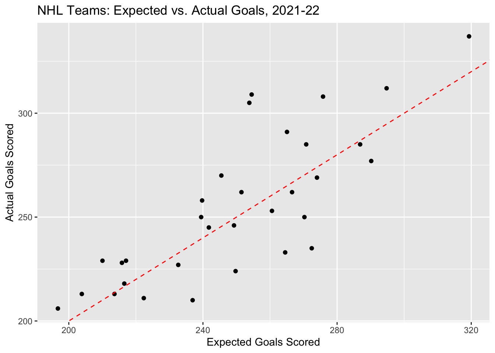
Note: A slope of 0 and an intercept of 1 are actually the default parameters for the function.
Q: What does it mean for a team’s data point to fall below this line? Above it?
A: If the data point is below the line, it means the expected goals were greater than the actual goals; if the data point is above the line, it means the actual goals were greater than the expected goals.
Q: Do you think that a team’s expected goals would be more likely to be closer to its actual goals for a ten-game stretch, an entire season, or five consecutive seasons? Why?
A: We would expect that as sample size increases, the result would become closer to expectation. So, actual goals would be most likely closer to expected goals over a span of five seasons.